Um cuidado simples, todos os dias
Hidratação com mais clareza.
Explore uma estimativa educativa de ingestão total de água e conheça alguns fatores usados pelo modelo, junto às suas limitações.
Ferramenta educativa: não é prescrição médica e não substitui consulta ou orientação profissional.

Feito para ser simples
Informação clara.
Sem complicar.
Um fluxo direto para explorar uma estimativa de hidratação: sem cadastro, sem histórico e com contexto sobre o que ela representa.
Ir para a calculadora